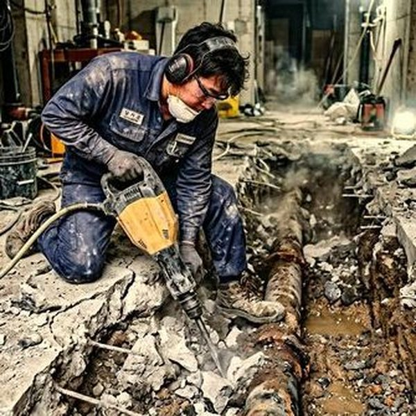
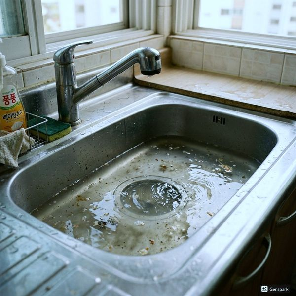
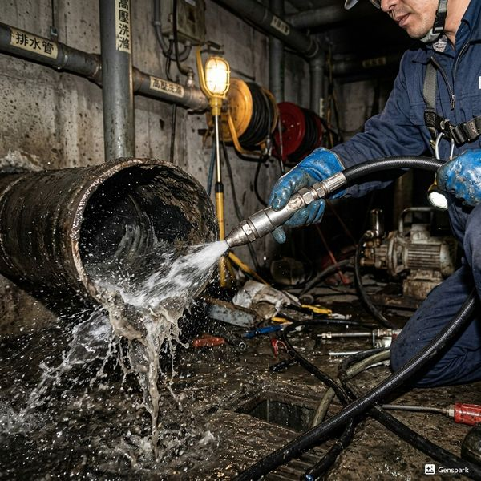

제우스시설관리 | 2025년 4월

공공 하수관의 막힘, 역경사 설계, 건물 지하 배관의 불완전한 방수, 그리스 축적이 주요 원인입니다. 특히 여름 장마철과 겨울 동결기에 역류가 빈번합니다.
✅ 역류 방지판 - 배관 말단에 설치하여 역류 자동 차단
✅ 그리스 트랩 - 음식점은 필수, 기름 분리 시설
✅ 침전조 또는 정화조 - 오염물 선 제거
✅ CCTV 모니터링 - 정기 진단으로 조기 발견
음식점은 보건 관련 법규에 따라 그리스 트랩을 반드시 설치해야 합니다. 정기적인 청소 기록도 남겨야 하며, 미이행 시 과태료가 부과됩니다.
월 1회 육안 점검, 분기별 CCTV 검사, 반기별 전문 청소를 권장합니다. 특히 장마철 전에는 사전 청소로 역류 사고를 예방하세요.
역류가 발생했다면 즉시 전문가를 호출하세요. 배관 내부 상황 파악 후 적절한 청소 방법을 결정합니다. 배관 손상이 심하면 일부 교체도 필요합니다.
상가 하수구 관리는 건물 가치와 사업 운영에 직접 영향을 미칩니다. 선제적인 점검과 정기 청소로 안정적인 배수 환경을 유지하세요.

